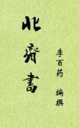

| 史籍·历史 > |
| 北齐书 |
| 作者：[唐]李百药 |
|
《北齐书》，纪传体断代史，共50卷，纪8卷，列传42卷，唐李百药编撰。成书于贞观十年（636年）。虽以记载北朝北齐的历史为主，但实际上记述了从高欢起兵到北齐灭亡前后约八十年的历史，集中反映了东魏、北齐王朝的盛衰兴亡。 《北齐书》成书时原名《齐书》，为区别于南朝梁萧子显所撰的《齐书》，始改称为《北齐书》，而称后者为《南齐书》。 到南宋时，五十卷的《北齐书》仅剩一卷帝纪、十六卷列传是李百药的原文；其余各卷，都是后人根据唐代史家李延寿所撰《北史》抄补修成的。 [2018/11/22，重新整理] |
 |